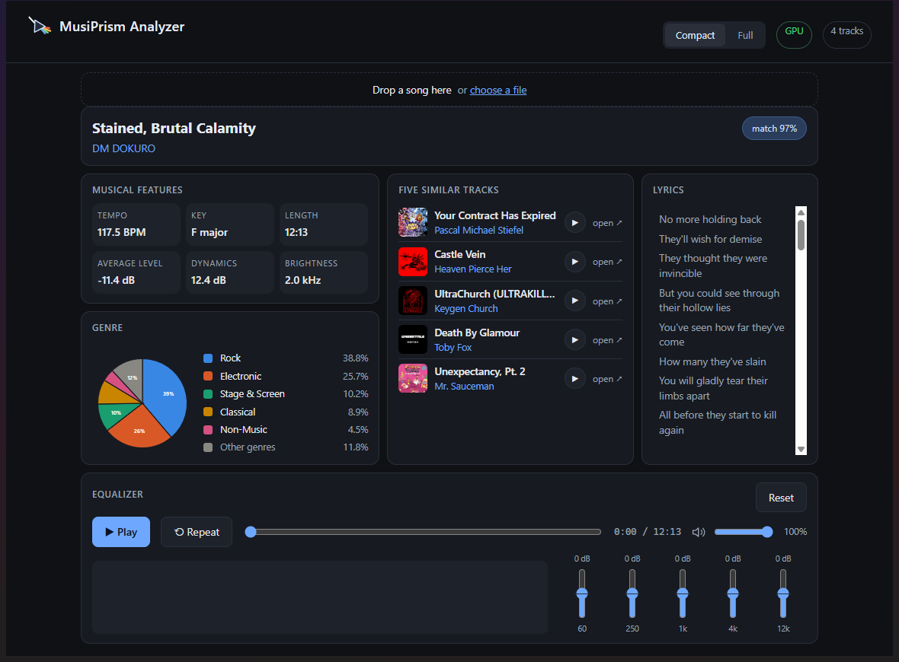
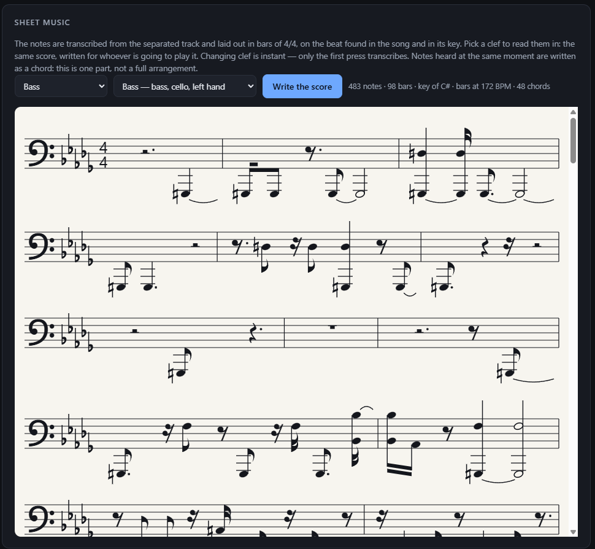
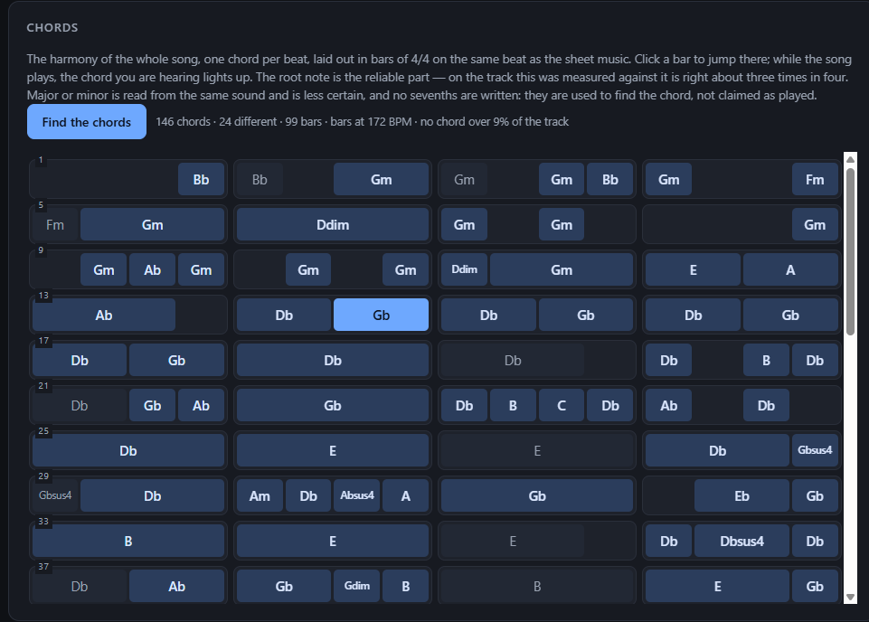
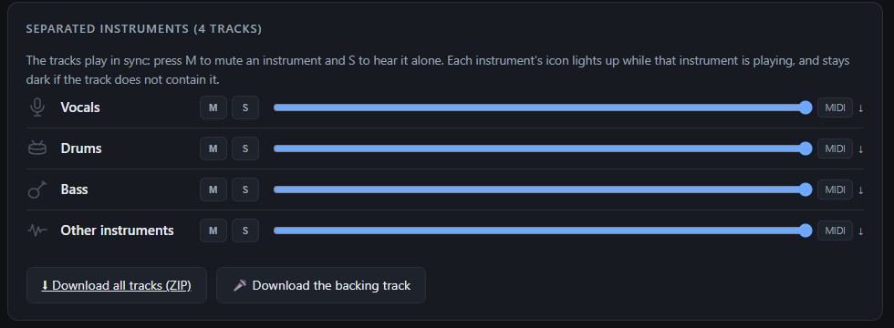
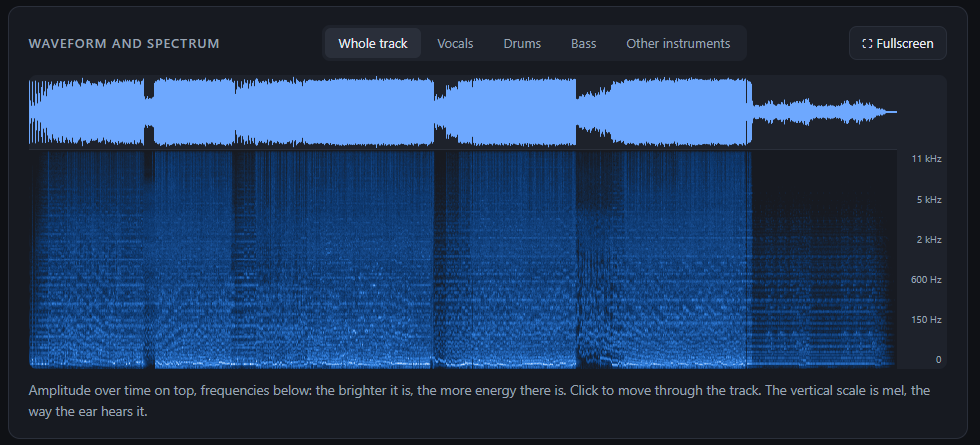

A prism splits light into its colours. This splits a song into its instruments — and then reads everything that can be read out of it.
You load a song. It takes it apart, and tells you what is inside.
Vocals, drums, bass, guitar, piano and the rest. The separated tracks sum back to the original, 75 dB below it — nothing is thrown away.
Mute one instrument, hear it alone, change its volume, download it — or take the whole backing track without the vocals.
Any instrument's part in real notation — bars, ties, beams, accidentals — readable in treble, bass, alto or tenor clef.
A chart you can play from: the chord of every bar, and the one you are hearing lights up as the song goes. Click a bar to jump there.
Down to 40% of the speed without dropping in pitch, loop between two points, or play the whole thing backwards.
Measured from the signal, not guessed, together with how tempo and key change across the track.
Intro, verse, chorus: sections cut on bar boundaries, with the repeated ones marked — that is how a chorus shows itself.
Genre from a model trained on 400 styles; artist and album from the acoustic fingerprint of the recording.
Synced line by line, scrolling and highlighting as you listen — when a synced version exists, and it says so when it does not.
The sung range from lowest to highest note, and every separated track transcribed to a MIDI file for your sequencer.
Five different artists rather than five songs off the same record, each with its cover and a preview you can play in the page.
Separation, genre, tempo, key and transcription all run on your own machine. Nothing is uploaded, and there is no account to make.
Two views: everything on one screen, or the whole thing.





One file, and it works out the rest by itself.
A single MusiPrism-Analyzer-Setup.exe, 3 MB. No administrator
rights needed: it installs for your user.
It reads what your graphics card can actually run — not just whether one is there — and takes the NVIDIA package or the processor one. Python, the models and ffmpeg come with it.
mp3, wav, flac, m4a, ogg, opus. New versions arrive on their own, and you decide whether to take them.
Free to use. Windows 10 and 11, 64-bit.
3 MB. It downloads the right package for your machine and puts MusiPrism Analyzer in the Start menu.
Download the installerThe installer is 3 MB, but what it fetches is not: about 2.7 GB with an NVIDIA card, 1.1 GB without. Everything is inside — there is nothing else to install and nothing to configure. Windows will say the publisher is unknown: the installer is not signed, and a certificate is bought.
Yours to use on any computer you own, for as long as you like, at no charge — but not to pass on to anyone else without asking first. One thing to know before you build a business on it: the genre model inside is licensed non-commercially, so the package as it ships may not be used commercially, by anyone. What is inside and under what terms is listed in THIRD-PARTY-NOTICES, which also travels inside the package.